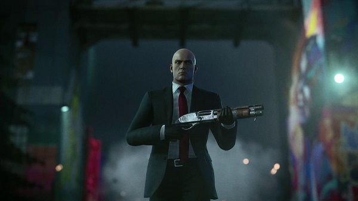
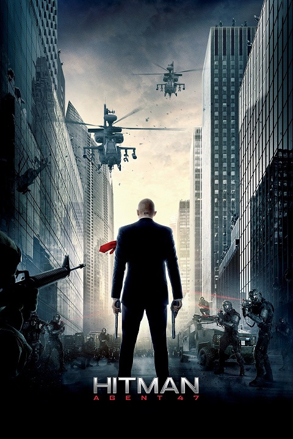
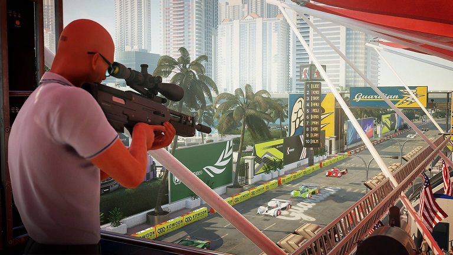

Hitman is a stealth video game franchise created by IO Interactive. In each installment, players assume the role of a cloned contract killer named Agent 47, who travels around the world to assassinate various targets that are assigned to him by the fictional International Contract Agency (ICA). Gameplay focuses on freedom of approach, with most levels placing the player in a large sandbox location where they have free rein to explore and find different ways to reach and eliminate their targets. Stealth is a major component of the gameplay and players are given various tools to accomplish their objectives, such as suppressed weaponry and the ability to take disguises, which allow 47 to blend in with non-player characters (NPCs) and bypass most restricted areas undetected.
  